March 16, 2016
| When I found out that my parents were going
camping at the lake with Brodie, including visits from my sister Desirae,
I immediately put in for vacation time so I could get in on the
action. I spent one night and one beautiful day with them and it was
a great time. We had perfect weather and Brodie had fun even though
he was fighting off a cold. |
|
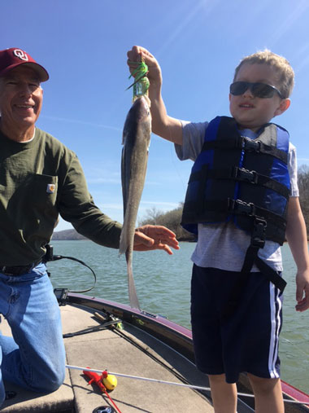 |
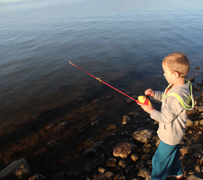 |
| This was on the day before I arrived. My dad actually caught the
fish, but Brodie was thrilled anyway |
Early that first morning I was there, he was ready to start fishing
immediately |
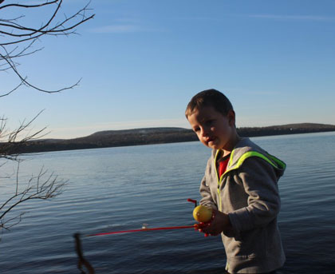 |
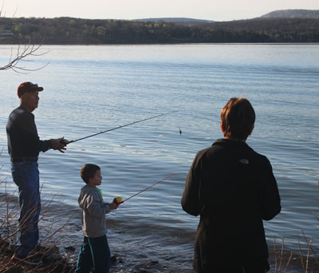 |
| You have to give him a wide berth. He doesn't actually get to use
hooks yet, but he still manages to be dangerous regardless. |
He likes to get real close to PePaw for fishing. |
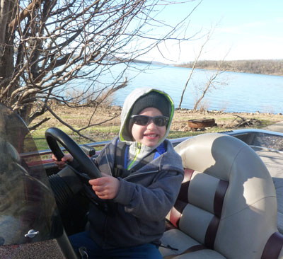 |
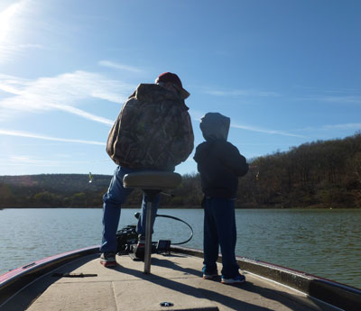 |
| Time for a boat ride! Brodie gets to drive the boat on the way to the ramp. | Fishing with PePaw on a calm, clear morning. Does it get any better? |
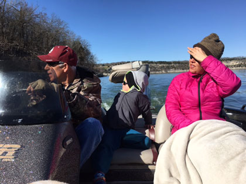 |
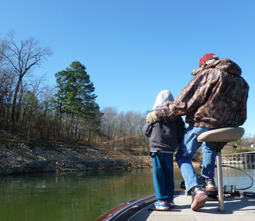 |
| Something caught our interest on the shoreline | More fishing in the coves |
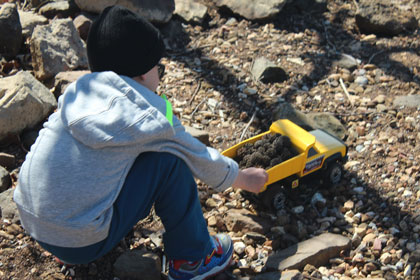 |
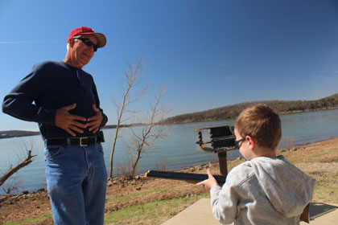 |
| Back at camp, time to play with the dump truck | Shooting PePaw (who was being a bear at the time) with his toy shotgun complete with realistic sound effects |
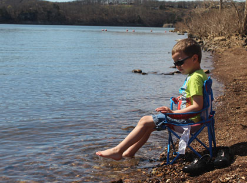 Cooling off the old dogs |
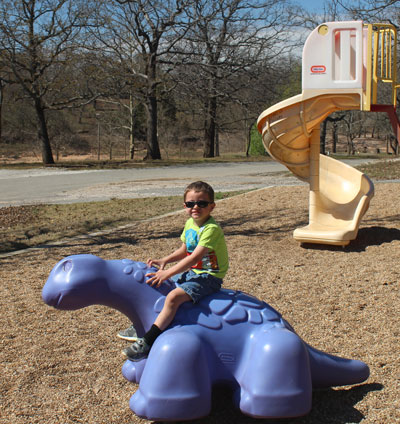 |
| Attack on the playground | |
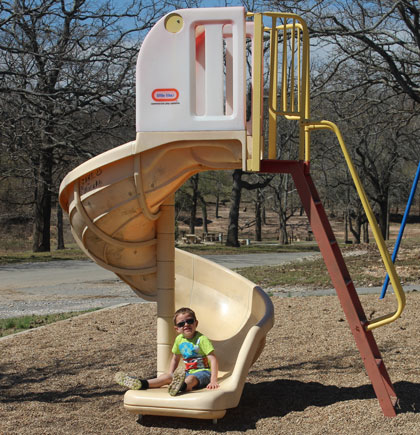 |
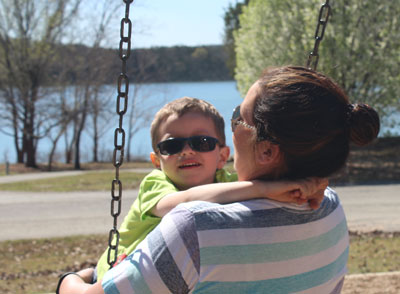 |
| I'm told that sliding is more fun when there are rocks all over the slide | He was in a mood to be sweet to his mom that day. Lovey lovey turtle dovey. |